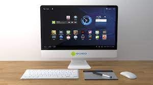

Ordenadores de sobremesa
¿Te gustaría tener un potente, sofisticado y barato computador de escritorio? Sin dudarlo, podemos afirmar que es la mejor opción si no necesitas una opción móvil. Pero, ¿Estás seguro de que es lo que necesitas? ¿No preferirías informarte un poco más antes?

Tipos de computadoras de escritorio
Ordenadores de sobremesa convencionales: son computadoras de propósito general, válidos para todo tipo de funciones, que suelen instalarse en una mesa de escritorio, y se utilizan tanto en el ámbito empresarial como para uso doméstico.
Computadoras portables: son ordenadores de sobremesa diseñados para ser fácilmente trasladables, pero no son ordenadores portátiles, ya que no pueden ser usados en movilidad puesto que no disponen de batería.
Estaciones de trabajo (worksation): son ordenadores de sobremesa de gran potencia destinados a tareas de ingeniería, ciencia, gráficos, trabajos técnicos o científicos, por lo que su hardware está optimizado para ofrecer el máximo rendimiento informático, así como fiabilidad, compatibilidad y escalabilidad.
PC All in One (AIO): los AIO son ordenadores de escritorio que combinan en la misma carcasa el monitor y la CPU, por lo que son compactos y son fáciles de transportar, incluso suelen incorporar asas de transporte en la propia carcasa.



¿Como saber si una computadora de escritorio es para ti?
Hoy en día, 2022, un ordenador es esencial para cualquier persona que se encuentre trabajando o en activo, y también para el usuario medio que busca hacer consultas o buscar información. No obstante, ¿Estás seguro que un ordenador de mesa es lo que buscas?
Potencia: Son ampliables, lo que quiere decir que puedes añadir más o menos RAM, CPU, Disco Duro, etc... Simplemente añadiéndolos a los componentes dentro de la caja de servidor (o el contenedor que tengan), lo cual hace que puedas dotarlos de unas capacidades y recursos mucho mayores.
Movilidad: Como es ovbio teniendo tal nombre, no son desplazables o son difíciles de desplazar. Perfectos para personas que no necesiten desplazarlos.
Precio: Al poder expandirse dentro de cajas de servidor (o cualquier contenedor para los componentes) y no preocuparse por la movilidad o el peso, no es necesaria la miniaturización de los componentes (hacer los componentes de la misma potencia más pequeños) y, evitar este proceso, ahorra mucho entre ordenadores de la misma potencia.
¿Puedes montar tu propio PC de mesa?
Existen muchas opciones hoy en día con respecto a los PC y ordenadores de mesa. Una que está adquiriendo mucha popularidad últimamente es la de montar tu propio PC. Vamos a ver sus principales ventajas:
Adaptación: Al seleccionar tú los componentes que vas a usar, podrás escoger la potencia necesaria para tus propósitos pero sin excederse, evitando también gastos y excesos innecesarios.
Precio: Al comprar los componentes por separado y luego ensamblarlos, puedes obtener grandes diferencias económicas con respecto al precio que hubieses pagado por el producto final ya ensamblado.
Estos beneficios están muy bien, pero para conseguirlos hay que hacer un esfuerzo y ensamblar los componentes, por no hablar de la selección de componentes compatibles. Para todo ello, dejamos aquí un vídeo explicando el proceso entero.